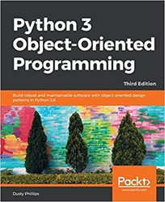
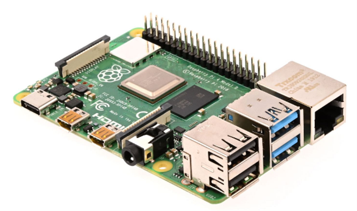
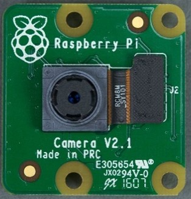
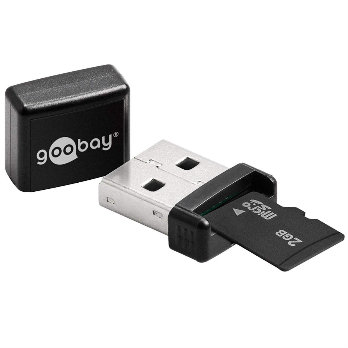

Resources and Materials#
Textbook#
This training uses the book “Python 3 Object-Oriented Programming”, third edition, by Dusty Philips.
Embedded System#
In weeks 2 and 3, a Raspberry Pi 4 and a Raspberry Pi Camera Board V2 - 8MP is used.
  {kind=link}
{kind=link}
{kind=link}
To operate the Raspberry Pi, it is needed to arrange for a Raspberry Pi power supply, micro-SD card and micro-SD card USB-adapter and cooling. Use a fast micro-SD card for optimal performance. The cooling can be either passive or active. For initial usage, you’ll need a keyboard, a mouse, and a display. It is assumed that you have such a set available.
Infrastructure#
A Git-repository is required for some Git exercises and to store all created code. The Git-repository is located on a Sogeti hosted server and accessible through VPN or via the office network.
Internet Resources#
A lot of useful material can be found on the Internet. Here is a list of the most frequently used sites related to this training:
https://www.python.org/ - the one and only!
https://www.python.org/dev/peps/pep-0008/ - PEP8, the authoritive Python style guide or use https://pep8.org - as a better readable version.
https://realpython.com/ - a great collection of tutorials.
https://www.google.com - Google is your friend😉. There is a vast amount of information and documented experiences available and any problem you run into is already documented on the Internet. The only challenge is to learn how to find the Internet pages that will help you in a reasonable amount of time.
Additional Material#
There are many other sources of material that will help you in your development as a professional Python engineer. We’d like to point you to a few resources that you may find helpful:
https://www.w3schools.com/python/ - well-structured reference material on basic language constructs.
https://www.w3resource.com/python-exercises/ - collection of Python exercises to refresh and test your Python skills.
https://www.hackerrank.com/ - a collection of programming exercises to sharpen your problem-solving skills. You can use the programming language of your preference, thus Python 😉. Sign up, it is for free.
Coursera via Einstein - a collection of trainings on many topics, including software engineering, design patterns, object-oriented programming, and Python. You can also easily access Coursera via Einstein -> My Learning.
Next via Einstein - again a great collection of trainings, including a complete training path on Python.
We live in an Agile world, and we apply Scrum to manage our day-to-day activities. Scrum has a collection of techniques and rituals, such as the daily stand-up, the planning refinement sessions, the demo sessions, and the sprint retrospective. The mechanics of these techniques and rituals are often taught; the intensity with which these are lived will make the difference. To increase your understanding on the background of Scrum, I would like to warm-heartily recommend the book by Jeff Sutherland, “Scrum, The Art of Doing Twice the Work in Half the Time”.